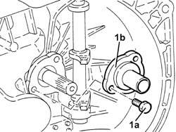

2110C20 SEALS FOR GEAR INPUT SHAFT - REPLACE WITH GEARBOX REMOVED
- Path
- Procedures > 21 GEARBOX UNIT > 2110 MANUAL GEARBOX WITH DIFFERENTIAL > 2110C GEAR CASES AND COVERS OF MANUAL GEARBOX WITH DIFFERENTIAL > 2110C20 SEALS FOR GEAR INPUT SHAFT - REPLACE WITH GEARBOX REMOVED
- Kind
- repair procedure (removal / refitting; the operation number is the code)
- Applies to
- engines: 3.2 V6, 1.9 JTD 16V; all production periods
- Interactive page
- https://sloeber94.github.io/elrnDB-aGt/en/#/125001246
Applies to: engines: 3.2 V6; all production periods
 Removing
Removing
 Refitting
Refitting1. Undo the bolts (1a) and remove the cover incorporating the gasket for the gearbox input shaft (1b).

Applies to: engines: 3.2 V6; all production periods
Refitting
RemovingPlace the cover incorporating the gasket for the gearbox input shaft back in its housing and secure it using the bolts.
Applies to: engines: 1.9 JTD 16V; all production periods
Removing
Refitting1. Undo the bolts (1a) and remove the cover incorporating the gasket for the gearbox input shaft (1b).
Applies to: engines: 1.9 JTD 16V; all production periods
Refitting
RemovingPlace the cover incorporating the gasket for the gearbox input shaft back in its housing and secure it using the bolts.